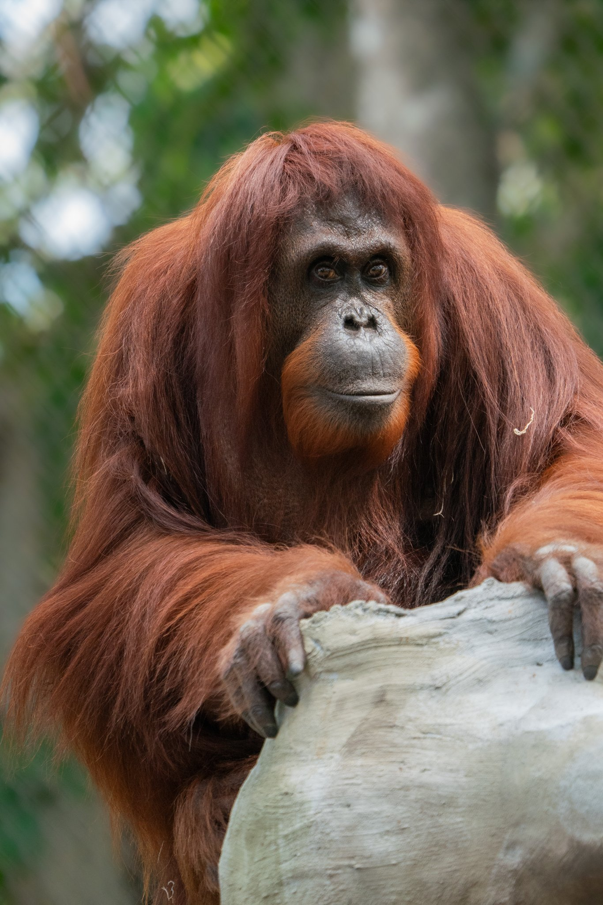
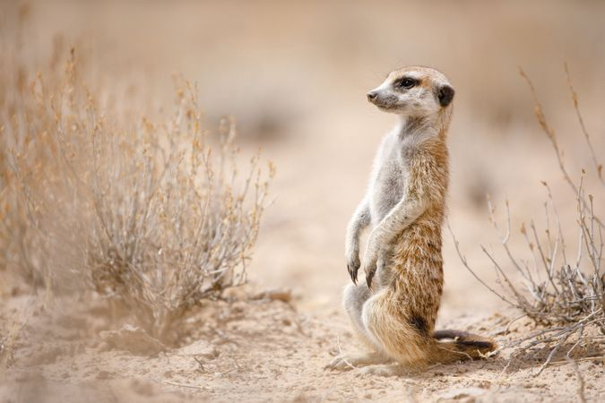
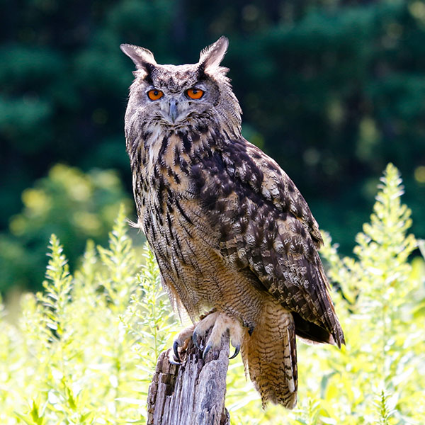
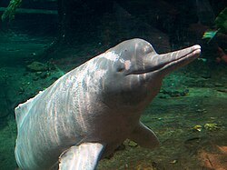
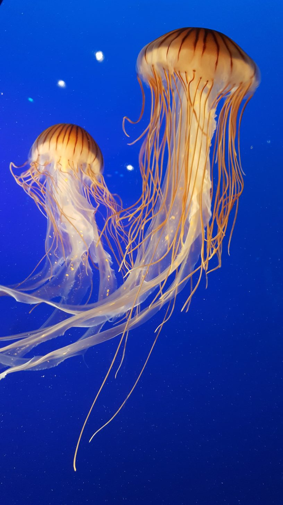
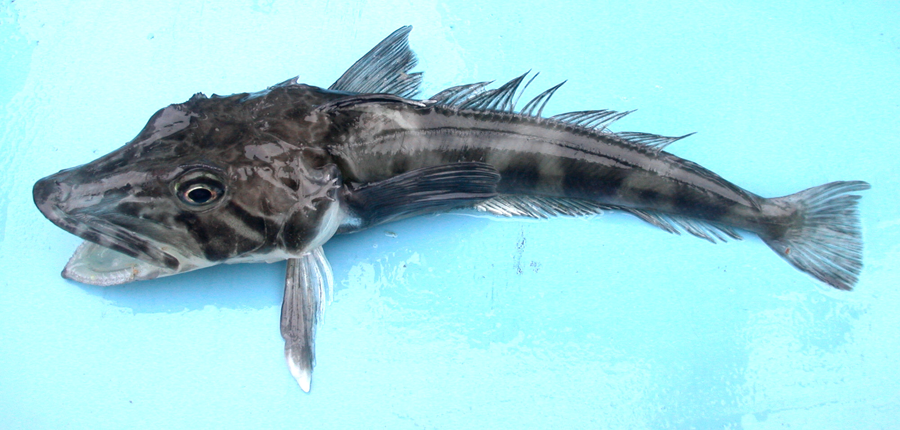

Amazing Animals of the World
| Animal |
Interesting Facts! |
| Common Name |
Scientific Name |
Continent |
Habitat |
Diet |
Traditional Name |
Endangered Species |
Unique Adaptation |
|  |
Orangutans |
Pongo |
Asia |
Tropical Rainforests |
Primarily Fruit-based |
Nandookomeshiinh |
Yes |
Long arms for swinging and hook-shaped hands |
|  |
Meerkat |
Suricata |
Africa |
Grasslands & Savannas |
Ajidamoo |
No |
Transparent third eye-lid for protection |
 |
Elk |
Cervus Canadensis |
North America |
Open Woodlands Forests & Rocky Mountain Regions |
Grass, Shrubs & Fruit |
Omashkooz |
No |
Thick double-layer winter coat |
|  |
Eagle Owl |
Bubo bubo |
Europe |
Small Mammals |
Gookooko'oo |
No |
Silent Flight |
|  |
Amazon River Dolphin |
Inia Goeffrensis |
South America |
Freshwater Systems |
Fish, Freshwater Crabs & Turtles |
Giingoo |
Yes |
Flexible neck allows to turn 90-180 degrees |
|  |
Box Jellyfish |
Chironex Fleckeri |
Australia |
Tropical Indo-Pacific Regions |
Shrimp, Prawns & Plankton |
Giigoonh |
No |
Advanced eyes for vision and potent venom |
|  |
Crocodile Icefish |
Antartica |
Chionodraco Hamatus |
Sea Floor |
Fish & Krill |
Adikameg |
Some |
No hemoglobin in its blood |